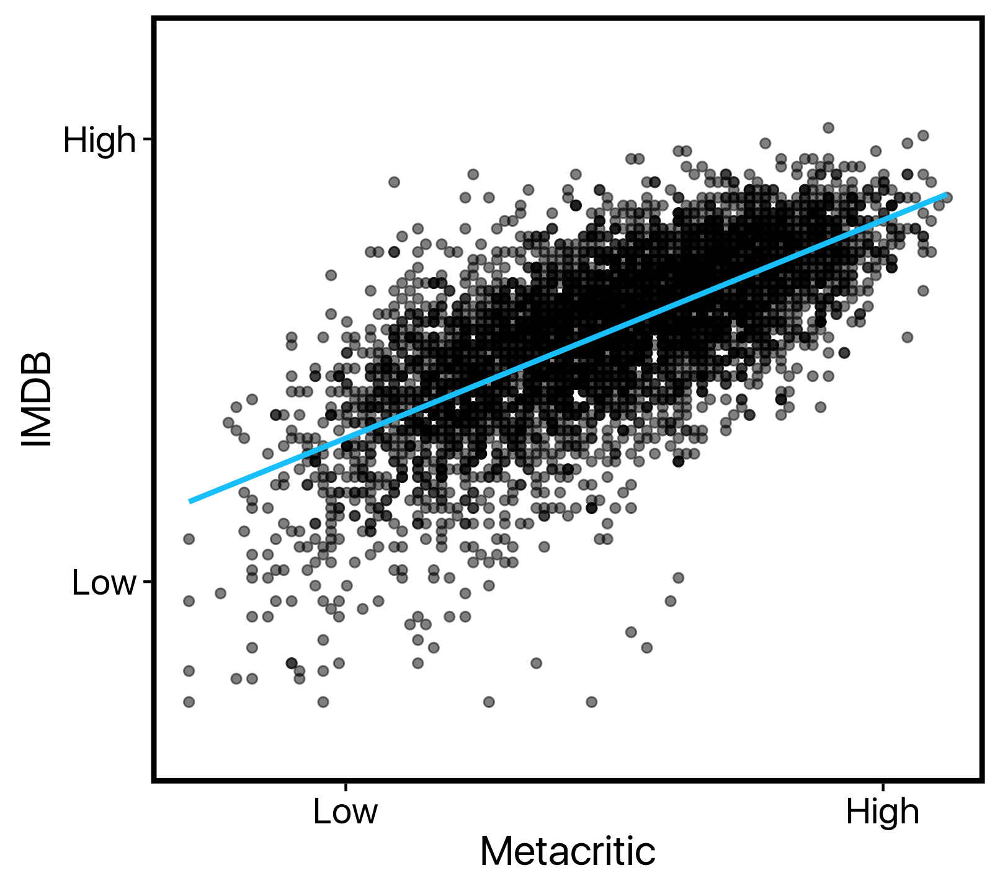
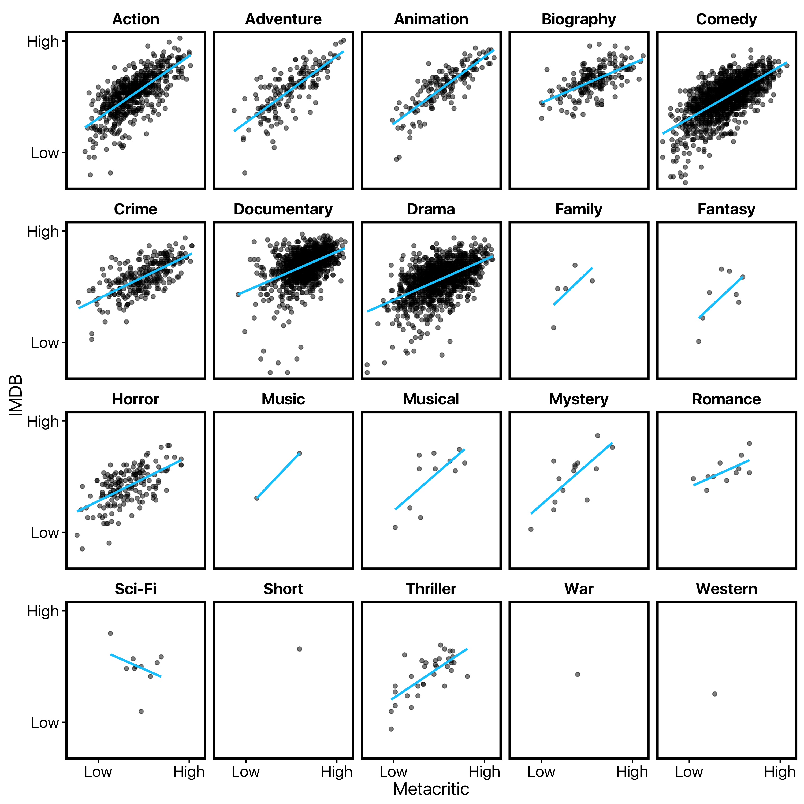
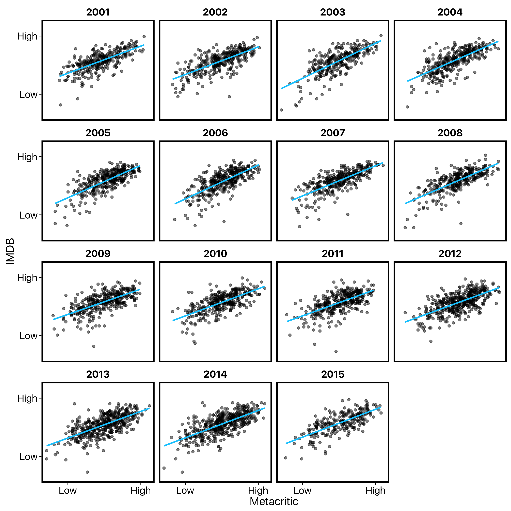
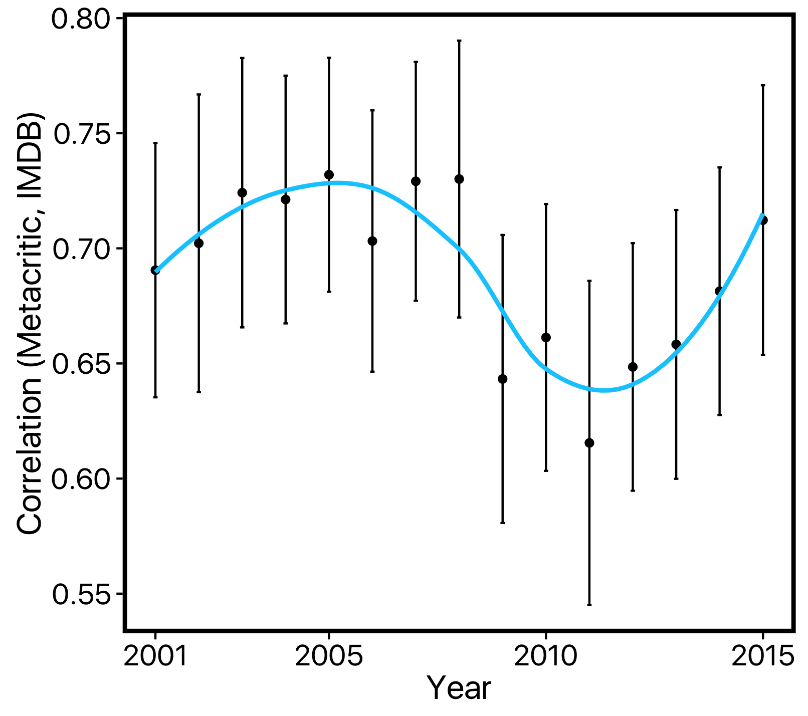
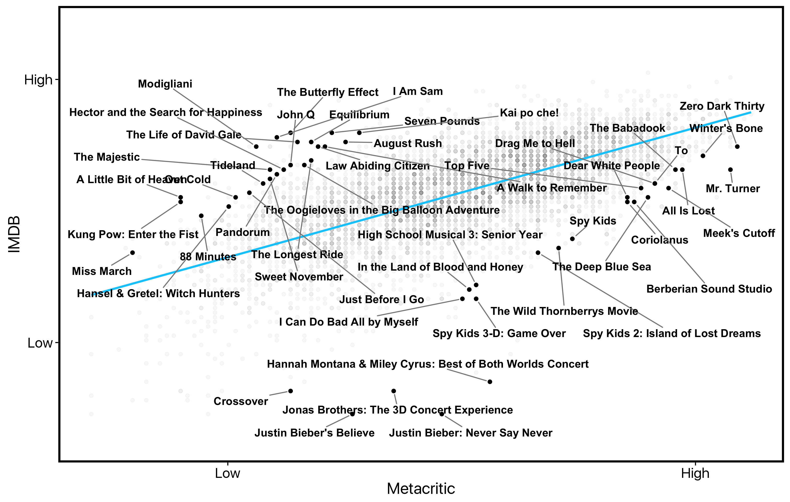

Art and life are subjective. Not everybody's gonna dig what I dig, but I reserve the right to dig it. - Whoopi Goldberg
In that quote, Whoopi puts forth a widely-held belief about art: it’s subjective and, as such, its value or quality varies greatly across individuals. In movies, it’s not difficult to think of cases that support this view. One of my favourite movies is Baz Luhrmann’s Romeo & Juliet, but most people — even some Baz fans — can hardly sit through it.
The problem is that it’s just as easy to come up with cases in which people generally agree on a movie’s quality. Hot Tub Time Machine was surprisingly funny given its ridiculous premise, but no one was surprised when Oscar season came around and John Cusack and company didn’t get the nod.
One case in which there may be more consistent disagreement over movie ratings is between film critics and regular movie fans. After all, critics not only watch a movie through their own eyes, but through the eyes of their readers — readers whose weekend plans they are constructing and who, in turn, establish judgments about a critic’s quality (and salary). This could alter reviewers’ judgments about a movie in comparison to fans who simply want to be entertained in the moment.
I wanted to put this question of critics’ versus fans’ ratings to the test. Thankfully, for a few other ongoing side projects here at Strong, we had put together a massive database of 29,591 films released from 2001-2015. This database included lots of information about each film (title, year, director, summary, awards, etc.) and, most importantly for present purposes, ratings from IMDB (where fans go to rate movies) and Metacritic (where critics’ reviews are compiled).
These data in hand, I could compare critics’ and fans’ ratings to ask several questions: Do critics and fans generally agree on a movie’s quality? How has the accessibility of critics’ reviews (now a search away on your smartphone) affected fans’ ratings? And what movies do critics and fans disagree on most?
Do critics and fans generally agree on a movie’s quality?
To answer this our first and most basic question, I simply looked at the correlation between Metacritic ratings and IMDB ratings on a film-by-film basis.
A high positive correlation (approaching 1) would suggest that films rated highly by critics are also rated highly by fans. A non-correlation (around 0) would suggest that fans’ and critics’ ratings are entirely unrelated. And a high negative correlation (approaching -1) would suggest (in true bizarro world fashion) that films rated highly by critics and rated poorly by fans (and vice-versa).
What we see is that, in fact, fans and critics tend to agree (r = .68). In my typical scientific efforts, a correlation like this would be cause for celebration — it’s not everyday I see such a strong link between two factors of interest. But considering what we are measuring here, it’s actually a fairly modest relation. A Pearson’s r of .68 means that only 46% of the variance between these two measures is shared — that leaves 54% to be explained by some additional factor (perhaps whether you are a fan or a critic?). 
We can take a closer look at these data by breaking them down by genre: 
When we do so, we see roughly the same relationship in each, with two possible exceptions: (1) Documentaries seem to have a disproportionate number of outliers which critics thought were OK but fans hated and, (2) Sci-Fi movies seem to follow that bizarro-world negative correlation I discussed earlier: the more fans like a movie, the lower critics rate it. Of course, the small sample of Sci-Fi movies in this database means this latter observation may simply be the result of a few controversial movies.
Is the agreement between fans and critics changing over time?
We’ve established that critics and fans tend to think along the same lines about a movie. However, there’s reason to think that this current level of agreement is not necessarily historically accurate. Critics’ and fans’ ratings are now mutually more accessible than ever. Fans can read critics’ reviews on the way to the cinema on their phone on opening night, and critics can go online and see the fan buzz for a movie before they write their review.
One possibility is that this has caused critics’ and fans’ views to slowly converge into a hive mind of movie opinion. But it’s just as likely a priori that this has caused them to diverge, as well: Maybe knowing that critics don’t like a movie is enough to make you think it’s actually pretty good, either because they lowered your expectations so much that it had to be pleasantly surprising or because, well, what do critics know anyway?
As a first pass at addressing this question, I simply summarized the correlation between critics’ and fans’ ratings by year: 
My first impression is… that this visualization is horrible. Unless there are massive differences year-to-year (unlikely), a graph like this which forces the reader to eyeball correlation estimates is essentially useless.
Thankfully, because we are interested in trends over time, we have a much better option: we can estimate the correlation year-to-year and plot those values side-by-side — looking for differences on the y-axis over time as an indicating in changing levels of agreement. Note that, because I wanted to compare estimates to see whether they are different from one another, I not only plotted a point indicating each correlation, but also error bars indicating the 95% bootstrapped confidence intervals of this estimate — a means of indicating the precision of our estimate: 
This visualization tells us that, indeed, critics’ and fans’ agreement levels have changed over time. However, both our diverging versus converging possibilities appear to be wrong. Instead, we see a non-linear pattern: While levels of agreement were stable through 2001-2008, there was a sharp (and significant) dip in 2009, and a slow recovery since then.
What happened in 2009? I have no idea. It could of course be that there were just a bunch of highly controversial movies that caused the sudden dip. But if that were the case, we might have expected a rebound in 2010; instead, the dip at 2009 was followed by a couple of other low-agreement years and then a gradual incline upward. Maybe it’s just a random walk over time, or maybe its a previously unknown (and the least important) effect of the mortgage crisis and recession — we’ll never know… at least not with only these correlations to work from.
What movies do critics and fans disagree on most?
In my final analysis, I wanted to take a look at those cases in which critics and fans disagreed most. Which movies do fans love that critics have panned? And which do critics praise while fans look the other way?
For simplicity, I’ll call the former type of film a ‘fan favourite’ and the latter a ‘critical darling’. (Yes I know these classifications are bit strange — a movie can be a critical darling if it’s like by 50% of critics and 0% of fans — but I needed a shorthand).
To classify films, we can simply take the movies with the greatest difference between their (normalized) IMDB and Metacritic scores. If we calculate this as Metacritic score - IMDB score, then a high (in absolute terms) negative value means that it’s a fan favourite and a high positive value means that it’s a critical darling.
One way to view these results would be in a bar chart illustrating the absolute difference scores and each movie’s name below it. But we’ve already had one bad visualization in this post, so I’ll spare you another and just tell you: That’s a boring and confusing way to look at these data. It also breaks a key guideline for data visualization: Once you have a representational format that works, stick with it.
So to illustrate the fan favourites and critical darlings, we can go back to our first visualization depicting agreement between Metacritic and IMDB. What you’ll see is that these high-disagreement movies are the points on the top-left and bottom-right perimeters of the cluster: As a sanity check, if you drew a line through only these points, you’d see the expected negative correlation: 
What we see here is that teenage musician concert movies mildly please critics while enraging fans, and The Butterfly Effect and John Q were actually pretty enjoyable despite poor reviews. More broadly, critics appear to remain steadfast in their feeling about a movie franchise even when their first reviews didn’t resonate with fans. Critics stuck by Justin Bieber (sort of) for both his original movie and follow-up despite poor fan reviews. They also gave the first two Spy Kids movies two thumbs up while fans remained less eager to see a third.
Conclusion
So is Whoopi right about art or, more specifically, film? Sort of. There are those movies that defy critics’ hatred and resonate with fans, and those movies that flop at the box office but win Academy Awards. But in general, critics and fans appear to be seeing eye-to-eye, or at least sitting side-by-side.
See the raw code and data for these analyses on Github. The data were retrieved from IMDB and the Open Movie Database. As always, I used dplyr and ggplot2 in R for the analysis. Here I also used the new ggrepel package for labelling movies in the last visualization.